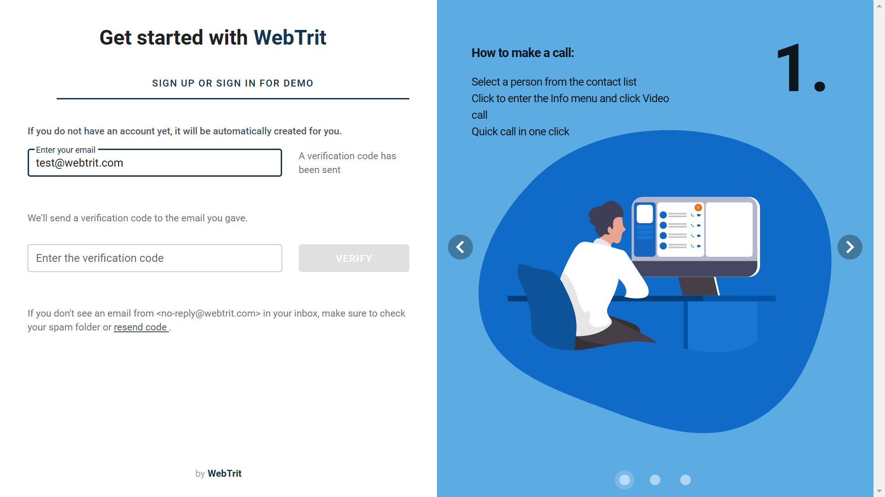
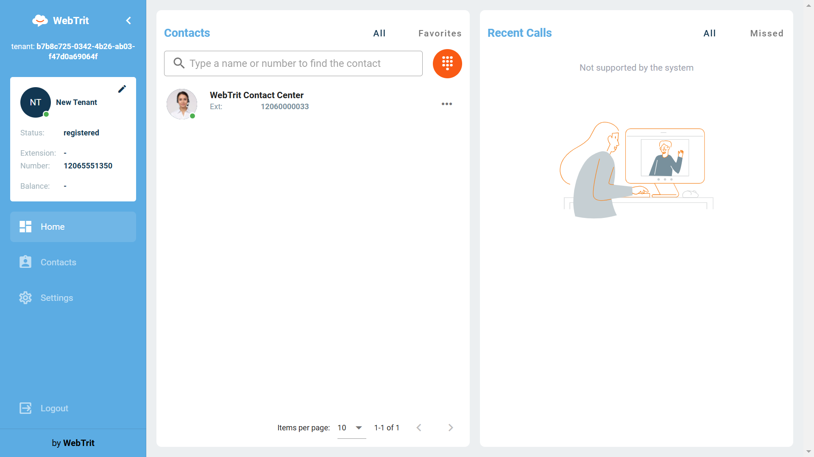
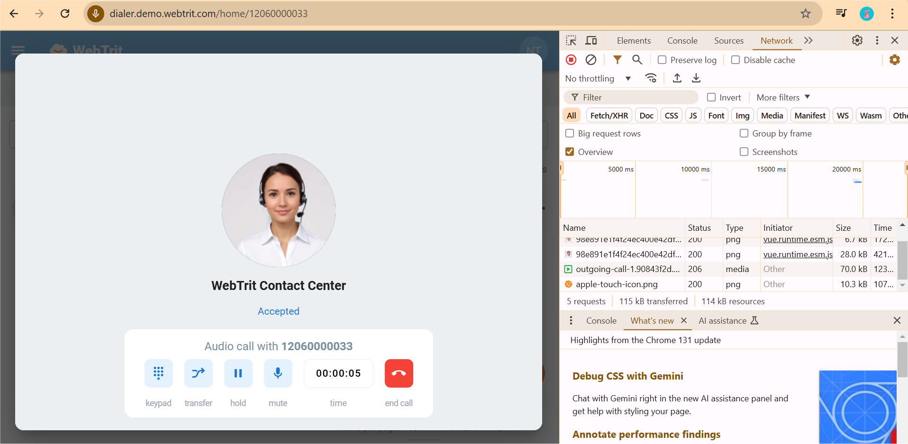
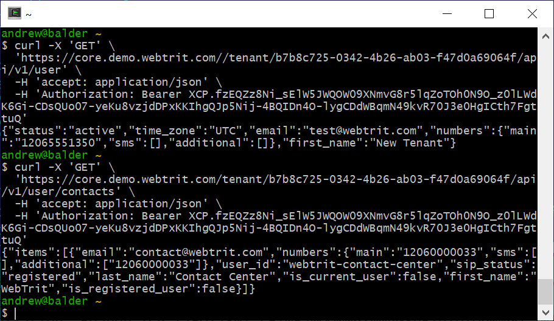
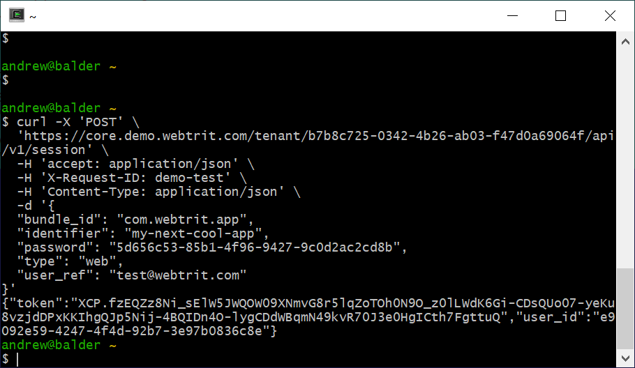
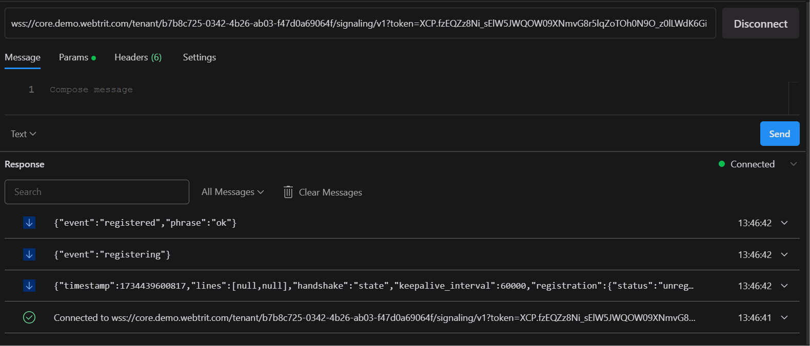

How to connect to WebTrit demo environment to jump-start the development of your WebRTC voice or video chat application
Sign up for WebTrit demo account
Please create a free account via https://signup.webtrit.com/.
Once you have logged into the WebTrit self-care portal, you will see the button “Send me the developer’s credentials” - click on it and the parameters for accessing WebTrit back-end from your application (such as the URL of the API server, tenant_id, your username + password, etc.) will be delivered to your email. That email will have the content very similar to the text below, but with the properly populated URL and other parameters, so it makes sense to follow there. 🙂
In the examples in the rest of this document we will use {CORE_HOST}
as the API server, but please use the actual API server address provided in the
email, since it may change in the future.
What is tenant ID and why do you need it?
You will be using our demo system, shared between multiple companies, so in order to
separate you from the other customers we create isolated environments, called tenants. You can read more
details
about this in the “Multitenancy in WebTrit” article. Make sure you add tenant ID into the API URL,
so if
your
tenant ID is {TENANT_ID} and you want to call /session method to login - the
URL
should look like
https://{CORE_HOST}/tenant/{TENANT_ID}/session
Verify that your account works
Test using WebDialer
You can open WebTrit dialer for tests using https://dialer.demo.webtrit.com/login?tenant={TENANT_ID}&email={USERNAME}. A one-time password (OTP) will be sent to your email.
Once logged in you can call WebTrit contact center
The great thing about the WebTrit Dialer is that you can explore the source code and monitor the communication between the application and WebTrit back-end, so you can use it as an example for your own application.
Alternatively, you download the WebTrit app for smartphones and test the functionality on a mobile device:


Authenticate with WebTrit back-end and obtain a session token
The first thing your application has to do is to establish an authenticated session with WebTrit back-end - this is done by sending an HTTP POST request to the /session endpoint of WebTrit core API. Make sure you insert the appropriate values into tenant_id, username and password. Also, create your own name for your application and use it as the value for the identifier parameter.
curl -X 'POST' \ 'https://{CORE_HOST}/tenant/{TENANT_ID}/api/v1/session' \ -H 'accept: application/json' \ -H 'X-Request-ID: demo-test' \ -H 'Content-Type: application/json' \ -d '{ "bundle_id": "com.webtrit.app", "identifier": "change-and-use-your-own-name", "password": "<password>", "type": "web", "user_ref": "{USERNAME}" }'
Example:
When authentication is successful, you will receive the access token to be used to authenticate further requests to the Core API - as well as requests to Signaling API.
Test the core API
This API is used for communication with WebTrit back-end to display the data about the user and the cloud PBX environment (for instance the list of cloud PBX contacts - other configured extensions in the PBX). To test it, we will send GET requests to /user (basic user information) and /user/contacts (the list of PBX extensions).
When sending your requests, make sure that you replace the value of tenant_id with the correct value - and of course you have to use a valid token in the “Authorization” field.
curl -X 'GET' \ 'https://{CORE_HOST}/tenant/{TENANT_ID}/api/v1/user' \ -H 'accept: application/json' \ -H 'Authorization: Bearer <token>' curl -X 'GET' \ 'https://{CORE_HOST}/tenant/{TENANT_ID}/api/v1/user/contacts' \ -H 'accept: application/json' \ -H 'Authorization: Bearer <token>'
Jump-start your development using the WebTrit dialer
If you want to develop a web application for WebRTC voice/video calling - you do not have to start from
scratch.
There is WebTrit dialer GitHub project
with
the
source code for a fully working web dialer application - just download it and put the correct server URL
{CORE_HOST} as a value for VUE_APP_WEBTRIT_CORE_URL parameter in the
.env file. More information about the available parameters and how to start a local copy of
the
Web
Dialer for development is described in the README.md.
Additionally, you might encounter an issue with dependency relying on an obsolete version of SSL. This can be resolved by specifying an option when starting the Dialer: NODE_OPTIONS=--openssl-legacy-provider.
Connect to WebTrit signaling API
Using the access token you obtained after the authentication - you can now use the WebTrit Signaling API (WSTP). Note, that just like with the WebTrit Core API you need to insert the tenant/your_tenant_id/ into the API URL.
WTSP URL structure:
wss://{CORE_HOST}[:<WebTrit Core port>]/tenant/{TENANT_ID}/signaling/v1?token=<token>&force=<true>
For instance:
wss://{CORE_HOST}/tenant/{TENANT_ID}/signaling/v1?token=XCP.fzEQZz8Ni_sElW5JWQOW09XNmvG8r5lqZoTOh0N9O_z0lLWdK6Gi-CDsQUo07-yeKu8vzjdDPxKKIhgQJp5Nij-4BQIDn4O-lygCDdWBqmN49kvR70J3e0HgICth7FgttuQ
Initiate a phone call
After the session to WebTrit Signaling API has been established - let’s make a phone call.
Whom to call? You can always call the 12060000033 number - it is a friendly IVR, so the call always will be answered. When you have the basic calling working, you can (either in the app itself or on signup.webtrit.com) invite your friends / colleagues / your alter-ego with a different email address. Every user, registered on the demo server, will be automatically assigned a “virtual” phone number (you may have seen 12065551350 in the screenshots above). These numbers look like real ones, but you can only call it within the demo server. This number is visible in the “My Account”, accessible by clicking on the round icon in the upper right corner of the app.
Logging out
When you are finished, it is strongly recommended to explicitly close the session - since if you do not do it and just stop your application, the session between WebTrit back-end and cloud PBX still will be active; WebTrit will maintain SIP registration to the VoIP PBX. In the long run this can create a resource overload.
curl -X 'DELETE' \ 'https://{CORE_HOST}/tenant/{TENANT_ID}/api/v1/session' \ -H 'accept: */*' \ -H 'Authorization: Bearer <token>'
Need Help?
If you have any issues - we are here to help! Send us an email to contact@webtrit.com.